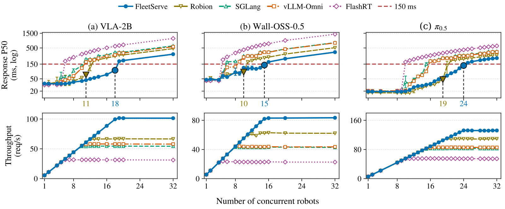

Contents · 7 sections
1A few terms first2Why throughput alone is not the goal3The scheduler asks two questions first4Walking through it: how A's 10 milliseconds of slack get spent5How many more robots it can serve6What this means for people building inference services7LimitationsSHARE
One robot is about to push a parcel onto the conveyor, another is carrying one through the air: whose actions should a shared GPU compute firstIn a warehouse, a row of robot arms is handling parcels. One has just picked up a carton and is about to flip it and push it onto the conveyor. The one next to it is holding a soft parcel and carrying it smoothly through the air. At the same moment, both robots ask the server for their next stretch of actions, and the two requests take about the same amount of compute.
But they are not equally urgent. Pushing a parcel is a contact action, and if the actions arrive a little late, the robot may need extra pushes. The path through the air is easy to predict, so getting new actions a bit later still lets the robot finish the move. If the GPU is already busy with other requests at that moment, who goes first, and whether one more request is squeezed in, decides whether the pushing robot gets stuck.

This paper comes from the X Square Robot team. They already have hundreds of robots driven by VLA models (large models that look at images, take an instruction, and output actions directly) working in real environments, and they need many robots to share GPUs to bring inference cost down. Existing approaches fall into a few groups. General inference engines such as SGLang and vLLM-Omni improve per-request efficiency and overall throughput, but high throughput does not mean the robots get more done, because late actions still slow them down. Robion already overlaps image encoding with action generation, but all requests move forward together in fixed rounds. Ordering by deadline (EDF) decides who gets the GPU next, but cannot stop work that is already running from slowing down an urgent request. Their XInfer separates two things: an asynchronous engine lets each stage of each request move forward as soon as its inputs are ready, and a scheduler first decides which requests need protection, then uses predicted interference to decide whether one more piece of work may start on the GPU right now. On three VLA models, the number of robots one GPU can serve while meeting the latency requirement is 26% to 64% higher than with Robion. Inference serving for a robot fleet should decide whether to admit new work by how much slack each request has left; these results come from emulated robot request streams with fixed inputs.
A few terms first
Each time a VLA model looks at a set of images, it outputs a stretch of future actions, called an action chunk. Until a new chunk arrives, the robot keeps executing the old one it already has. If it runs out of actions before the new chunk arrives, the robot stops and waits.
One VLA inference has three stages. The ViT stage encodes the images from three cameras into tokens. The Prefill stage has the language model read the images, the instruction, and the robot state. The Action stage generates actions step by step through denoising. The three stages compute in different ways and can be interleaved on the same GPU.
Every request carries a response budget, the number of milliseconds within which it must come back. When the robot is in a hurry the budget can be as tight as 90 milliseconds, and when it is not it can loosen to 400 milliseconds; these are the two levels the paper's experiments alternate between. The budget is filled in by the robot controller or a higher-level policy, and the scheduler simply schedules by it.
The paper's target metric is effective robot capacity (ERC): the maximum number of robots one GPU can serve at once while meeting latency and reliability requirements. In the three-model comparison, the requirement is a median response time below 150 milliseconds with not a single request error.
Why throughput alone is not the goal
First, how much does a late action cost? On a real parcel-handling robot, the authors deliberately added delay before actions were delivered. Adding 200 milliseconds cut the number of parcels completed per hour by 29.6%, which shows that late actions turn directly into less work done. Going from 100 to 150 milliseconds of added delay, the handling rate dropped by 18% in one step. So the authors set the threshold at 150 milliseconds: 50 milliseconds of baseline latency plus the 100 milliseconds before the curve starts to fall steeply.
Next, how do robots send requests? Each robot has at most one request outstanding, and consecutive requests are at least 180 milliseconds apart. If a reply comes late, the next request goes out late too. So a slow server does not just make this one request slow; it also means the robot updates its actions less often overall.
Last, parallel work brings interference. With the full engine turned on, π0.5 throughput at 24 robots rises from 54.90 to 131.53 requests per second, 2.40 times as much. But in a separate experiment with 32 robots, adding "each stage moves forward independently" raised throughput by only 9.7%, while the latency of the slowest 1% of requests (P99) rose from 467 to 560 milliseconds. The reason is that a piece of GPU work cannot be interrupted once it starts. If a non-urgent request is in the middle of Prefill, an urgent request moved to the front of the queue still has to wait for it to finish, or run alongside it and slow down with it.
The scheduler asks two questions first
Before each stage starts, the XInfer scheduler has to answer two questions.
The first question is: which requests need protection? For each request, the scheduler computes its slack: the time left until its deadline, minus the time its own remaining computation still needs. Slack is how much longer the request can afford to be held up. The scheduler then looks at the ordinary work (work that is not protected) that other requests are running on the GPU, and asks how long the longest piece will take to finish; if there is no such work, that time is 0. If the slack is shorter than that time, just waiting for that piece to finish could make the request miss its deadline, so the request is marked as protected. Hoot says
Illustrative: request C has 20 milliseconds left until its deadline. Even with the GPU to itself (concurrency 0), its remaining work still takes 25 milliseconds. The body walk-through covers how A spends its slack, not this rule.
Late even alone → enters L → promoted but not in effective set H → ordinary candidates need not yield to it
- deadline and isolated work → set LThe scheduler first estimates how long C still needs with the GPU to itself — this isolated time is only used to decide whether C is already too late. 20 milliseconds remain until the deadline and the isolated work still takes 25, so 20 is less than 25 and C is placed in set L.20 < 25
- slack under load → promotion into PThe slack used for promotion is computed under the current load: running work, plus protected ready work that available resources can still issue. C already needs 25 milliseconds even alone, so remaining time under load is only longer, slack is at most 20 − 25 = −5 milliseconds, and C is still promoted into the promoted set P.slack ≤ 20 − 25 = −5 ms
- P and L → effective protected set HThe effective protected set is not P itself, but H = P with L removed. C is in P and also in L, so it is not in H, and being promoted is not the same as getting effective protection.
- ordinary candidates ← C with negative slackWhen admitting ordinary work, the scheduler only checks how much it would slow requests that are in H, using slack computed under the same load. If C stayed in H, its slack would be at most −5 milliseconds, so no candidate that adds any time could pass 'slowdown does not exceed slack', and other work would all be blocked.slowdown ≤ slack (at most −5 ms): none can be admitted
- H without C → ordinary work and other requestsAfter C is temporarily left out of H, ordinary work is still judged against other requests' slack. C can still be served; if the prediction later changes and it could catch up even alone, it can get protection again.

Source
Paper §4.3: effective protection is withheld while the request is predicted late even in isolation; Appendix Algorithm 2: L is the set of requests with ℓ−t < R(0), and the effective protected set is H = P\L. Request C's 20 ms and 25 ms are illustrative.The second question is: may a new piece of work start on the GPU now? Work belonging to protected requests runs whenever resources allow. New work from other requests is first checked by predicting how many milliseconds it would slow down each protected request once it is on the GPU. The way it does this is to estimate each protected request's remaining time twice: the rest of its current stage, plus its later stages and output processing, once with the work currently on the GPU and once with this candidate added. The difference is how much the candidate would slow that request down. The candidate is admitted only if this slowdown does not exceed the other request's slack; otherwise it waits, and the scheduler moves on to the next candidate.
The prediction is not a guess, because the scheduler uses a model calibrated in advance that estimates the remaining time of each stage from how many ViT, Prefill, and Action stages are running on the GPU at once. In replays with 8, 18, and 20 robots, the mean estimation error is only 2.0 to 2.8 milliseconds. Each decision takes only 73 to 77 microseconds of CPU time (P99).
Walking through it: how A's 10 milliseconds of slack get spent
Below is the illustrative example from the paper's Figure 6. The numbers come from the paper and are there to show the rules, not measured results.
Step one: compute A's slack. Request A has 50 milliseconds until its deadline, and its own remaining computation needs 40 milliseconds, so its slack = 50 − 40 = 10 milliseconds.
Step two: decide whether to protect A. Three pieces of non-urgent work are running on the GPU, with 4 milliseconds (ViT), 14 milliseconds (Prefill), and 8 milliseconds (Action) left. The longest is 14 milliseconds. A's 10 milliseconds of slack is shorter than 14, so just waiting for that Prefill to finish could make A miss its deadline, and A is marked as protected.
Step three: candidate u, a Prefill stage from another request, wants to start. The prediction says admitting it would slow A down by 6 milliseconds. Because 6 does not exceed 10, u is admitted. A's slack is then updated to 10 − 6 = 4 milliseconds.
Step four: candidate v, a ViT stage, wants to start, and the prediction says it would also slow A down by 6 milliseconds. A now has only 4 milliseconds of slack, 6 is more than 4, and v waits. If the scheduler had checked u and v separately against the original 10 milliseconds, both would have been admitted, A would actually be 12 milliseconds slower, and it would miss its deadline. That is why the slack is updated after every admission before the next candidate is checked.
Step five: requests that have not arrived yet count too. The scheduler groups the requests that arrived in the last 180 milliseconds by budget: if a budget value appeared k times, it expects another request with that budget every 180 ÷ k milliseconds, and estimates how long it will take using all three stages. Another candidate w passes the check against the currently protected requests, but by this method a request e with an earlier deadline is expected to arrive while w is running. The scheduler adds w to the work running at the same time, estimates how long e will take to go through all three stages starting from ViT after it arrives, and adds a reserve for front-end handling. That time exceeds e's budget, which means that if w starts now, e will not make its deadline after it arrives, so w waits too.
After these five steps, you can see that protecting an urgent request does not mean stopping everything else; the scheduler keeps admitting new work onto the GPU within what the slack allows. The paper's ablation compares exactly this against "stop everything": blocking all ordinary work whenever any request is protected lowers the on-time rate by 7.5 to 30.5 percentage points across eight settings.

The largest drop in the figure comes from removing interference prediction: the scheduler then estimates each stage only by how long it takes when running alone, ignoring the slowdown from running together. At 18 robots, attainment drops by 45.5 and 51.4 percentage points on the alternating-phase and parcel-handling workloads. This shows that the admission decision depends above all on estimating correctly how much running together slows things down. Removing the forecast of future requests hurts mainly when urgent requests make up a large share and arrive in bursts; at 16 and 18 robots, adding this check raises mean attainment by 5.0 and 11.3 percentage points.
How many more robots it can serve
First, the three-model comparison. Every system uses the same model weights, the same inputs, and the same GPU, and robots are added one at a time until the median response exceeds 150 milliseconds or an error appears.
| Serving system | VLA-2B | Wall-OSS-0.5 | π0.5 |
|---|---|---|---|
| XInfer | 18 | 15 | 24 |
| Robion | 11 | 10 | 19 |
| vLLM-Omni | 10 | 8 | 15 |
| SGLang | 10 | 5 | 14 |
| FlashRT | 5 | 4 | 9 |
(Numbers from the paper's Table 2, in robots.)
This shows that on the same GPU, XInfer serves 5 to 7 more robots than Robion, the closest system. The abstract's 1.26 to 3.75 times has its low end at 24 versus 19 against Robion on π0.5, and its high end at 15 versus 4 against FlashRT on Wall-OSS-0.5.

Next, budgets that differ. In this experiment each robot switches between budgets of 90 and 400 milliseconds after every 30 completed requests, to imitate alignment, contact, and transport alternating during block stacking. All scheduling policies share the same VLA-2B backend and must return at least 95% of requests within budget. XInfer serves 18 robots, Slack-Gate (which pauses non-urgent work whenever some request has less than 40 milliseconds of slack) 15, first-come-first-served 14, and EDF 12.
The budgets in the parcel-handling workload come from gripper events in 23 real production episodes. On this workload, XInfer serves 14 robots, Slack-Gate 12, first-come-first-served 10, and EDF never meets the target within the tested range. More than 60% of the requests in this workload have tight budgets, and at times every robot is in a tight-budget phase at once.
What this means for people building inference services
When serving a robot fleet, a request's deadline should be set by what the robot is doing right now, and the scheduler must see both the deadlines and the interference on the GPU.
If you serve VLA or other closed-loop control models, start by adding a response-budget field to each request and let the robot side fill it in from its current motion phase. Then split each inference into stages so that stages from different requests can interleave, instead of queuing whole requests or moving in fixed rounds. Finally, measure how much each stage slows down when several run together, and use that to check whether urgent requests can still make it before admitting new work. Evaluation should change too: reporting throughput and mean latency is not enough; report how many robots you can support under the latency requirement.
Limitations
The robots in the experiments are emulated request streams, and each request uses fixed images from three cameras, a fixed instruction, and a 14-dimensional synthetic state, rather than live data from real robots. The paper's parcel-output curves extrapolate from single-robot delay experiments to many robots, and the authors note this is not the same as measured multi-robot output.
How response budgets are set is outside the scheduler; the paper only tests budgets that alternate between 90 and 400 milliseconds and budgets derived from production records. Admission decisions rely on predictions rather than worst-case timing bounds, so they do not guarantee that every request returns on time. The VLA-2B weights are not public, Robion is the authors' own single-GPU reimplementation, and all GPUs are consumer Blackwell cards.
How did this read for you?
Hoot made a note. Thanks for the feedback.
One tap, no sign-in; tap again to undo. Only anonymous counts are kept, never who you are.
Discussion
Add experiment details, reproduction notes or a different take. Requires a GitHub sign-in.
Loading the discussion…